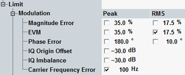

Transmit Modulation Limits
A poor modulation accuracy of the NodeB transmitter increases the transmission errors in the downlink channel of the WCDMA network and decreases the system capacity. The error vector magnitude (EVM) is the critical quantity to assess the modulation accuracy of a WCDMA NodeB.
3GPP defines requirements for the frequency error and for the EVM. Verify them for the test models 4 and 5.
In the configuration dialog, you can set limits for both measurement results, depending on the modulation scheme. You can also set limits for other modulation results.

Modulation limit settings
The following table provides an overview of the related limits defined by 3GPP.